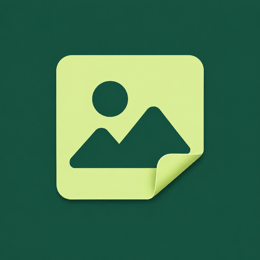

PocketPress
Small files. Big possibilities.
Compress photos to a target KB size, resize, compare, save and share new copies. Photo processing stays on your Android device.
Support
Publisher: Corzfree
Contact: free4564567@gmail.com
No PocketPress account is required. Clear recent outputs in the app to remove app-managed copies. Files saved to your gallery or shared elsewhere must be deleted in those locations.
照片更輕巧，原圖保留
PocketPress 提供指定 KB 大小、調整尺寸、前後比較、儲存與分享。照片在裝置內處理，不上傳至開發者伺服器；廣告及隱私同意服務可能使用網路。
支援與隱私聯絡信箱：free4564567@gmail.com。